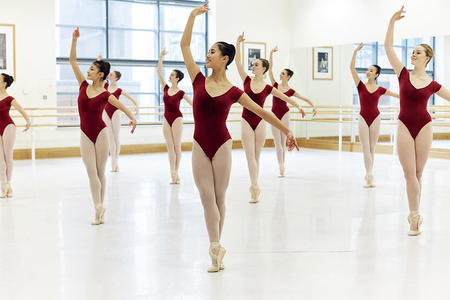
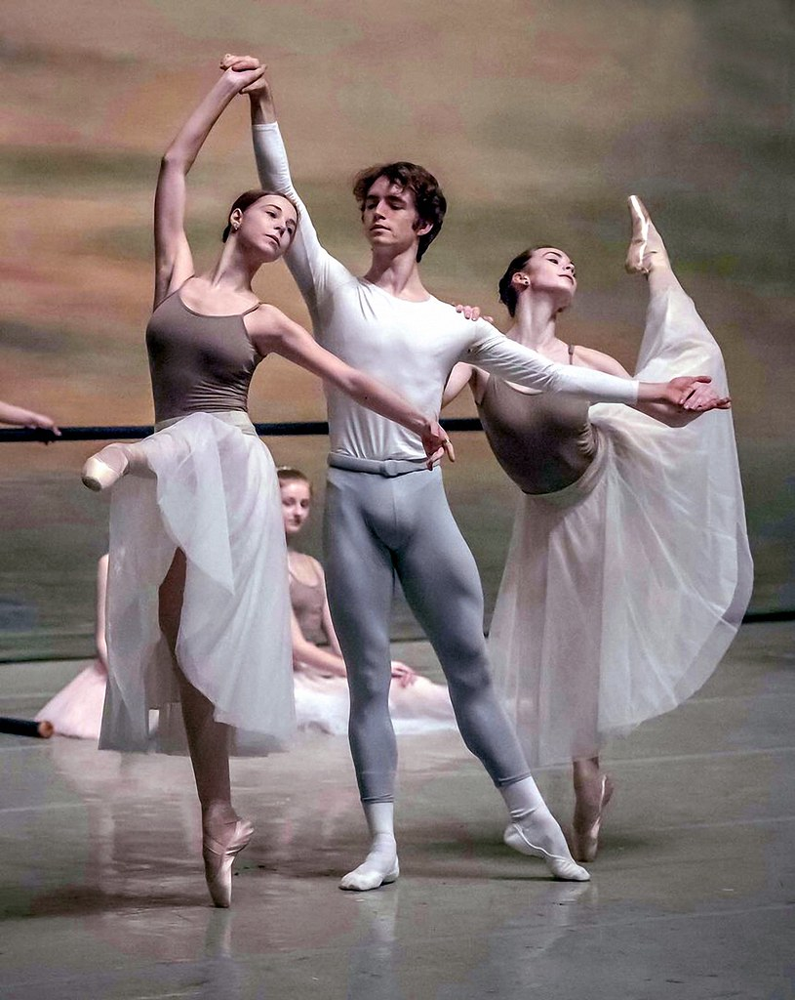
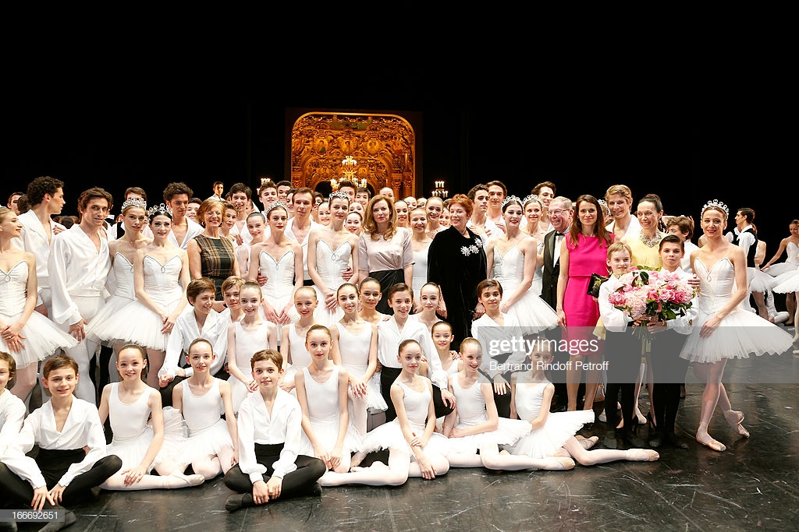
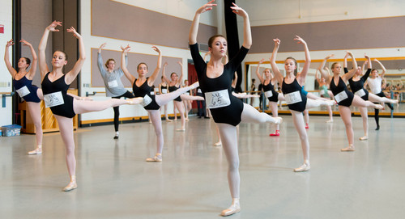
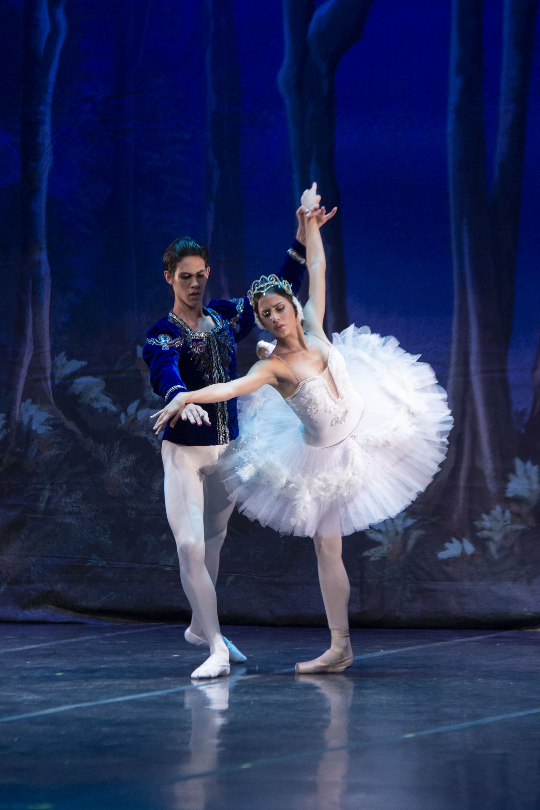
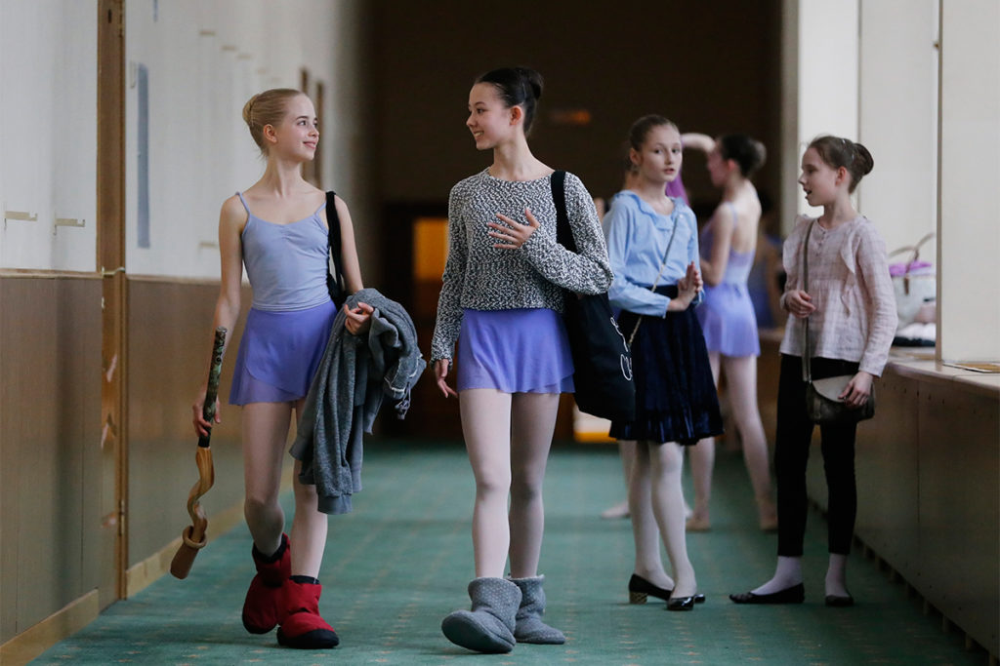

<body bgcolor="#f0f8ff">
</body>
<table border="0" align=center>
    <tr><th colspan=3 align=center>
      
   </th></tr><table>
<table border="1" cellspacing="0" cellpadding=5 bordercolor="#000000" align=center>
    <tr>
         <td><center><a href="index.html"></a><footer><I><B><font size="4">Sobre a dança<I><B></footer></center></td>
         <td><center><a href="site3.html"></a><footer><I><B><font size="4">Que roupa devo usar?<I><B></footer></center></td>
         <td><center><a href="site4.html"></a><footer><I><B><font size="4">Sapatilhas de Ponta<I><B></footer></center></td>
         <td><center><a href="site5.html"></a><footer><I><B><font size="4">Melhores Bailarinos<I><B></footer></center></td>
         <td><center><a href="site6.html"></a><footer><I><B><font size="4">Melhores Escolas<I><B></footer></center></td>
<table><br>
</tr><table><br>
<table border="0" align=center>
    <tr>
        <td><I><B><font size="6">Melhores Escolas<B><I></td></tr>
</table>

<table border=0 cellpadding="10" align=center>
    <tr>
         <td><center><footer><font size="1" face="Century">Foto de:<a href="https://www.flickr.com/photos/royalballetschool">Royal Ballet School</a></footer><center></td>       
         <td><font size="4" face="Century"><B>Royal Ballet School<B></td>
         <td><font size="4" face="Century"><justify>Foi inaugurada em 1926 em Londres, capital da Inglaterra. É um dos centros de treinamento de balé clássico mais importantes e tradicionais do mundo. Há quem diga que a escola é bem rígida e exigente com seus alunos. Mas também, não é atoa que de lá saíram talentos incríveis como Margot Fonteyn, Anya Linden e Lunn Seymour.
A formação de uma bailarina na Royal Ballet School é de aproximadamente 8 anos, com aulas em horário integral. Mas para quem quer seguir carreira na dança, certamente fará uma boa escolha com a escola de Londres. Ela é considerada uma das três melhores escolas do mundo para obter treinamento em ballet.</justify></td>
        
    <tr>
         <td><center><footer><font size="1" face="Century"><footer><font size="1" face="Century">Foto por Alexander Kualspb</footer><center></td>
         <td><left><font size="4" face="Century"><B>Vaganova Ballet Academy<B><left></td>
         <td><font size="4" face="Century"><justify>Essa escola foi fundada em 1738 em São Petersburgo, na Rússia. A Vaganova Ballet Academy tem uma longa história de produção de bailarinas de alto nível. Podemos citar alguns nomes como  Marius Petipa, Jules Perrot e Enrico Cecchetti.
Além de formar bailarinos de renome, a escola de São Petersburgo criou os três grandes clássicos do ballet: Lago dos Cisnes, A Bela Adormecida e O Quebra-Nozes.</justify></td>
        
    </tr>
  <tr>   
         <td><center><footer><font size="1" face="Century">Foto por Getty Images</footer><center></td>
         <td><left><font size="4" face="Century"><B>Dance School of the Paris Opera<B><left></td>
         <td><font size="4" face="Century"><justify>A Escola da Cidade Luz (Paris), é ainda mais antiga que a escola Vaganova, que citamos acima. Essa senhora das escolas foi fundada em 1713. A seleção de bailarinos funciona de uma maneira diferente: crianças entre 8 e 11 anos passam por um processo seletivo de seis meses. Ao final, os escolhidos começam o treinamento para formação de bailarino, que dura 6 anos. 
Essa ideia de selecionar criança vem do rei Luis XVI (lembram dele das aulas de história?). Ele acreditava que quanto mais cedo as crianças começassem, mais fácil seria o processo de aprendizado.</justify></td>
        
    </tr>
  <tr>   
         <td><center><footer><font size="1" face="Century">Foto por Trent Nelson</footer><center></td>
         <td><left><font size="4" face="Century"><B>The School of American Ballet<B><left></td>
         <td><font size="4" face="Century"><justify>Nasceu em 1948, em Riga, na então União Soviética. Filho de um oficial estalinista, teve de enfrentar a resistência da família quando afirmou seu desejo de ingressar no Ballet Kirov. Mesmo em meio à polarização da Guerra Fria, foi definido pelo crítico do The New York Times como o mais perfeito dançarino que já tinha visto.
Incomodado com os papéis secundários que o ballet tradicional russo lhe conferia por conta de sua baixa estatura, Mikhail passou a fazer parte do American Ballet Theater, na década de 70, sendo dançarino principal e seguindo o estilo contemporâneo.
Mais tarde, se tornou também diretor artístico da companhia. Por sua participação no filme “Turning Point”, concorreu ao Oscar de Melhor Ator Coadjuvante em 1977. Com passagem pelo New York City Ballet, naturalizou-se cidadão americano.
Baryshnikov, ainda, fundou a White Oak Dance Project, uma companhia itinerante, e inaugurou, no ano de 2005, o Baryshnikov Arts Center, em Nova York.</justify></td>
        
    </tr>
<tr>   
         <td><center><footer><font size="1" face="Century">Foto de Secretaría de Cultura de la Ciudad de México</footer><center></td>
         <td><left><font size="4" face="Century"><B>La Escuela National de Danza<B><left></td>
         <td><font size="4" face="Century"><justify>Assim como a Rússia, Cuba também é super famosa por formar grandes escolas de ballet e, consequentemente, grandes bailarinos. Fundada em 1998, essa jovem escola de ballet já mostrou para o que veio. Atualmente, os instrutores são membros e professores do Ballet Nacional de Cuba.
Lá, os alunos conseguem aprender técnicas clássicas e também incorporar outros estilos de dança, dando ênfase na Cultura Latina Americana.</justify></td>
        
    </tr>
  <tr>   
         <td><center><footer><font size="1" face="Century">Foto por YURI KOCHETKOV /EPA</footer><center></td>
         <td><left><font size="4" face="Century"><B>Bolshoi Ballet Academy<B><left></td>
         <td><font size="4" face="Century"><justify>Quem pensa em ballet, logo faz a conexão com a Rússia, mais especificamente com o Ballet Bolshoi. A Escola é uma das mais antigas do mundo, com 240 anos de história.
É famosa por formar bailarinos de renome internacional, como Maya Plisetskaya, Vladimir Vasiliev, Ekaterina Maximova e Nina Ananiashvili.
Dizem que o exame de admissão na companhia é bastante rigoroso. E não seria pra menos. A escola precisa manter a qualidade e a fama que ganhou com todos esses anos de trabalho primoroso.</justify></td>
        
    </tr>
</table>
<table border="0" align=center>
    <tr>
<br><br>
<table border=0 width=100%>
            <td bgcolor="#00000"width="100%"><font color="#f0f8ff" face="Century"> <h3>  
               <center> Share:     Contato: ceciliamoreira2508@gmail.com ou (12)98259-1020</center> 
             </h3></font></td> </tr>
           <td bgcolor="#00000"width="100%"><font color="#f0f8ff"> <h3> 
           <center> O que achou das informações? Tem alguma sugestão?</center><br>
<center><textarea cols="70" rows="10" placeholder="Escreva aqui..."></textarea></center><br>
<center><input type="submit" id="btEnviar" value="Enviar" /></center> <br> <center><input type="reset" id="btLimpar" value="Limpar" /></center> 

</table>